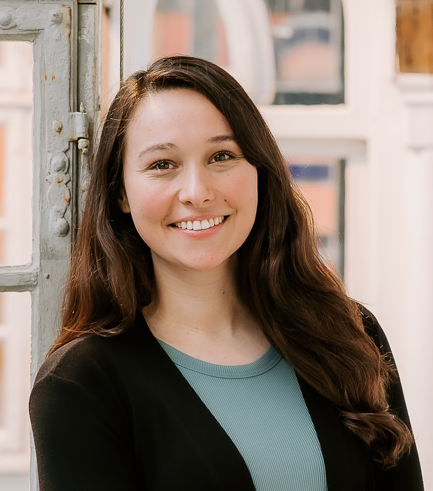

Christoph Lampert
Professor, Institute of Science and Technology Austria
Workshop 2
Workshop 2 is part of the Data Privacy in Machine Learning P1 program. It will focus on privacy in limited-trust settings, with particular interest in approaches that bring together ideas from differential privacy, decentralized learning, secure computation, and cryptography.
The program includes invited talks by Christoph Lampert, Christian Rechberger, Edwige Cyffers, Christian Weinert, and Tamer Mour, as well as contributed talks selected through the call for contributions. The first day of the workshop will be a day of tutorials on differentially private machine learning and cryptography.
Registration deadline: October 28, 2026
Cost: 675 DKK
Professor, Institute of Science and Technology Austria

Professor, TU Graz

CNRS Researcher, Lamsade at Dauphine University in Paris

Associate Professor, Royal Holloway, University of London

Principal Investigator, The Italian Institute of Artificial Intelligence (AI4I)
We are seeking submissions for 20-30 minute talks on topics related to privacy-preserving machine learning and privacy in distributed settings. The workshop will not have a poster session.
Topics of interest include:
Location: Aarhus, Denmark
More details to come
